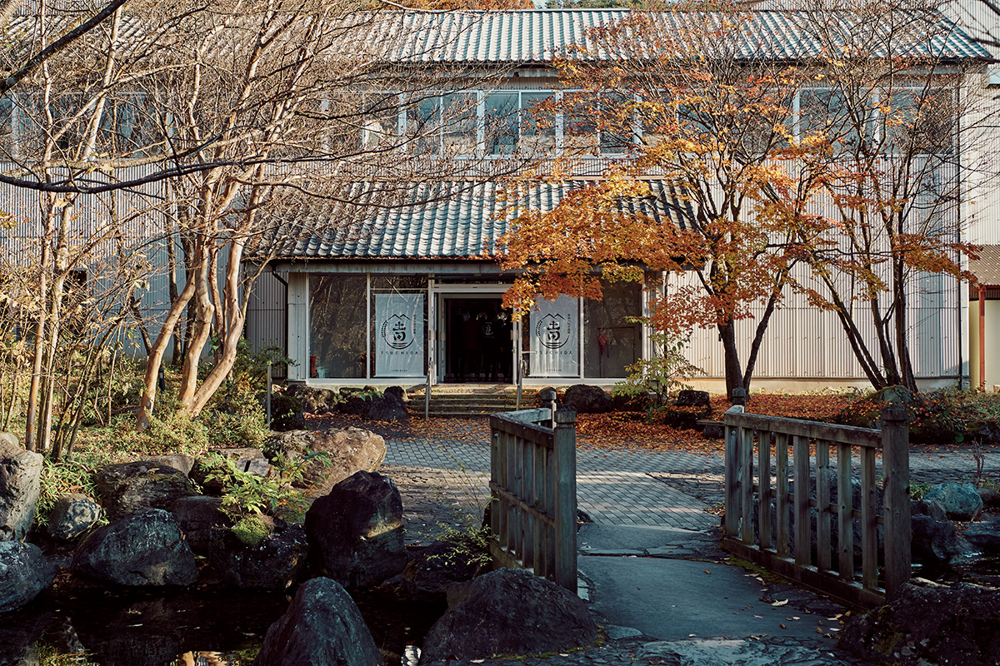
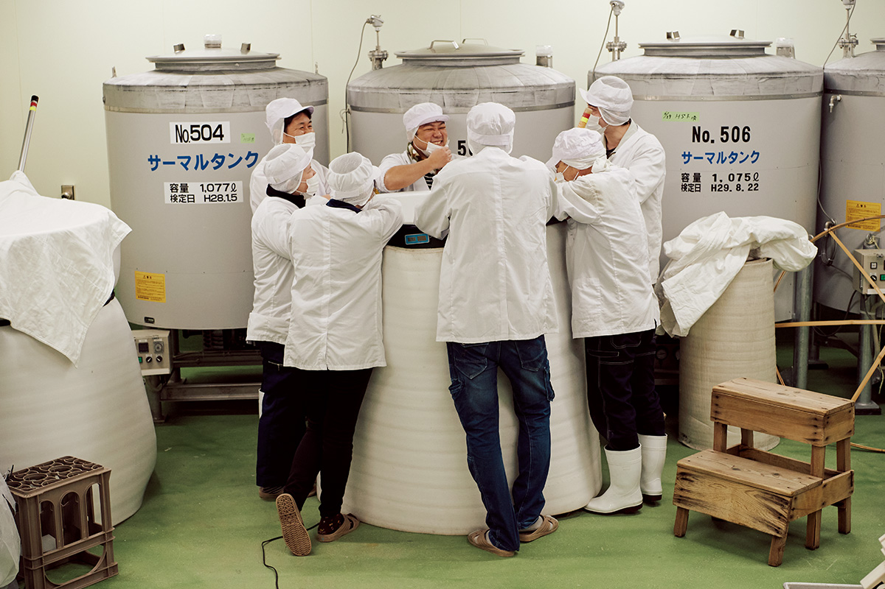
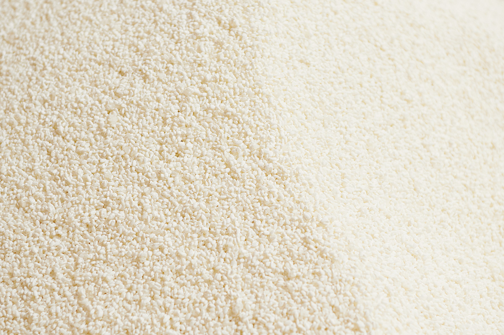
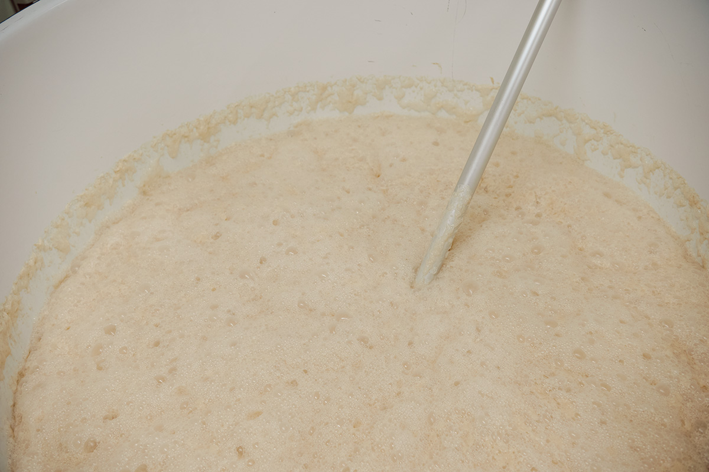
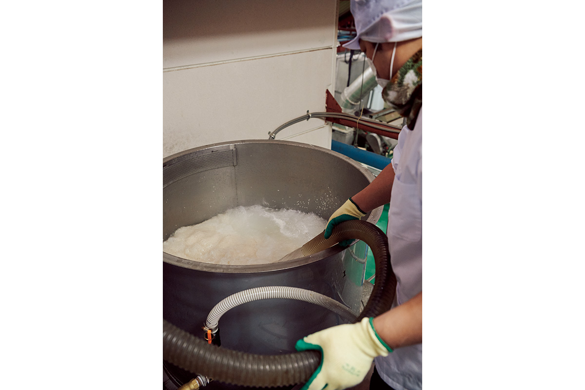
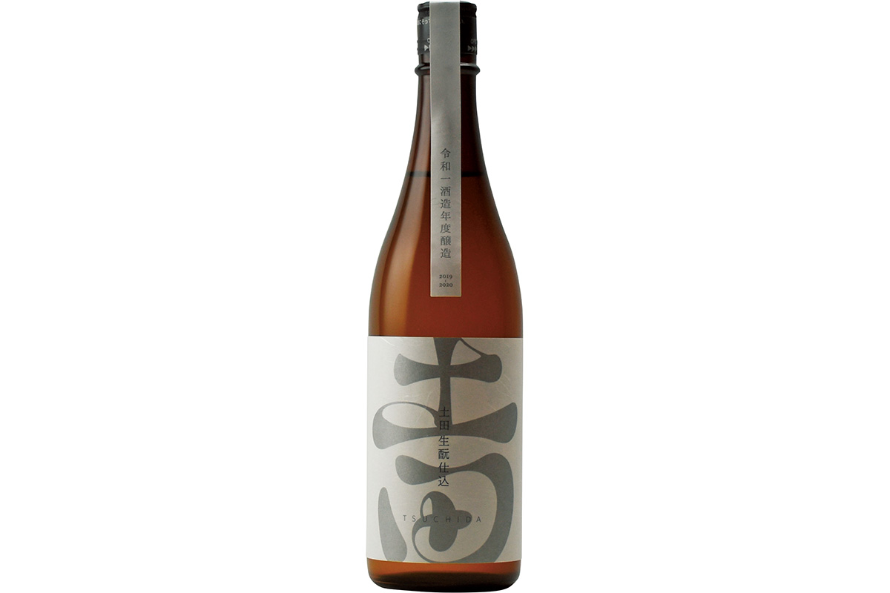
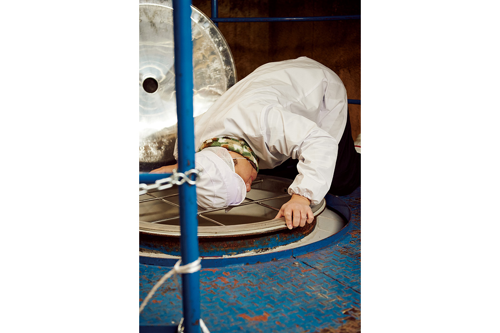
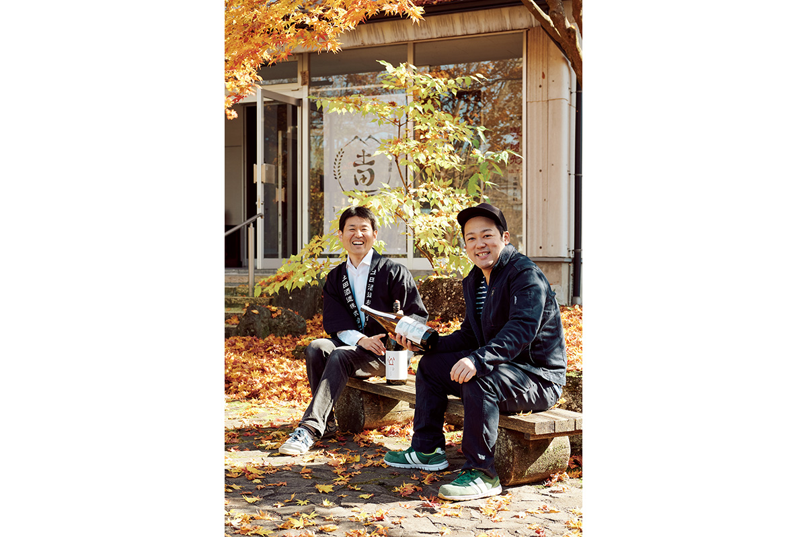

Префектура Гумма · Каваба · сакэ
«Цутида сюдзо»: сакэ по методу эпохи Эдо, которое проверяют данными

Сакэварня «Цутида сюдзо» в горной деревне Каваба работает с 1907 года. Здесь отказались от всех добавок и вернулись к методу эпохи Эдо, а помогают им в этом датчики, анализы и графики в смартфоне.
Место
Вода с горы Хотака
Деревня Каваба лежит на южном склоне горы Хотака, священной горы этих мест. Больше 80% её земли занимает лес, а реки и горячие источники делают её краем, богатым водой. Из подземной воды горы Хотака, риса, выращенного в Гумме, кодзи и микроорганизмов здесь варит сакэ «Цутида сюдзо», сакэварня, основанная в 1907 году. Долгие годы её знали по местному сакэ «Хомарэ Кокко».

О сакэварне заговорили, когда шестой глава семейного дела Юдзи Цутида и главный мастер, тодзи, Гэнки Хосино начали варить сакэ без оглядки на правила: выдвигали гипотезу, проверяли её и шли дальше. К 2021 году всё сакэ здесь делали методом кимото. Этот способ известен с эпохи Эдо, и искусственную молочную кислоту в нём не добавляют. Отказались и от всех остальных добавок, даже от тех, которые закон не обязывает указывать на этикетке.
Две вещи отличают «Цутида сюдзо» от соседей. Кодзи здесь готовят быстро, на очень сильном грибке. А вместо специального сакэ-риса берут обычный столовый рис и шлифуют его совсем немного, примерно так, как бурый рис превращают в белый.
Метод
Эпоха Эдо и цифры
Сильный кодзи

Дикие дрожжи
За несколько лет до 2021 года сакэварня перестала добавлять дрожжи, и тогда в полную силу заработали дикие дрожжи из воздуха. По словам Юдзи Цутиды, для диких они необычные: дают много спирта и почти не дают постороннего привкуса.
«В сакэ без добавленных дрожжей вкус „Цутида“ создают как раз эти дикие дрожжи. Они приносят нам достаток, поэтому мы ласково зовём их дзасики-вараси и бережём»
Юдзи Цутида
Дзасики-вараси в японских поверьях это дух-ребёнок, который живёт в доме и приносит ему богатство.

Столовый рис

Серию «Цутида» начали в 2016 году методом ямахай, а в 2019 году перевели на кимото. Для сакэварни, которая раньше делала в основном простое столовое сакэ, это было заявление о новом курсе: с тех пор здесь варят только дзюммай, сакэ из одного риса без спирта.

Данные и люди
Сакэ на живых микроорганизмах не поддаётся привычным приёмам ускорения: если бактерии не в духе, сакэ может выйти не таким, как задумано. Поэтому в «Цутида сюдзо» каждый день измеряют кислотность, аминокислоты, крепость и другие показатели. Сбой, который в эпоху Эдо обнаружили бы только после закладки, здесь можно заметить по цифрам и предотвратить заранее. Такое производство меньше зависит от чутья одного человека и потому устойчивее.
Данные здесь лишь инструмент для разговора с микроорганизмами. Решает всё равно человек: мастера работают на ощущениях, а цифры только подтверждают то, что подсказывают глаза, нос и руки.

Вкус
Сакэ, как будто жуёшь рис
Юдзи Цутида объясняет, зачем всё это нужно.
«Старый сильный грибок позволяет быстро сделать кодзи, и вкус получается лёгким даже у мало шлифованного риса. Столовый рис мы почти не шлифуем, чтобы сохранить его собственный вкус. Сегодня по учебникам образцом считается чистое сакэ из риса, сточенного больше чем наполовину, с добавленной кислотой и дрожжами. Но вместе со сточенным уходит и часть вкуса. Сварить сакэ из риса, который и так вкусно есть, это очень ценно, и из уважения к природе его хочется не шлифовать»
Юдзи Цутида
Он хочет, чтобы сакэ было на вкус как жуёшь варёный рис и чтобы его пили с самой разной едой, как едят рис с закусками. Кто-то поставит такому сакэ ноль баллов, а кто-то сто пятьдесят, и это, по его словам, интереснее, чем стремиться к среднему. Возможно, именно так и было на вкус сакэ эпохи Эдо.
«Я не думаю, что традиция это просто повторять старую технику. Нужно свободно искать свой идеальный вкус, иначе молодые не увидят, как интересно это дело, и отрасль не будет развиваться. Хочу каждый день что-то обновлять, варить сакэ, достойное того, чтобы остаться через 10 и 20 лет, и передать эти приёмы следующему поколению»
Юдзи Цутида
Люди
Хозяин и мастер

Юдзи Цутида родился в 1976 году в Гумме, младшим из четырёх братьев. Он работал в компании, выпускающей видеоигры, а в 2003 году пришёл в семейную сакэварню и стал её шестым главой. Гэнки Хосино родился в 1985 году в Токио, окончил колледж биотехнологий и в 2012 году стал тодзи «Цутида сюдзо».
В 2005 году Гэнки Хосино позвонил сюда с просьбой взять его варить сакэ. Он обзванивал сакэварни Гуммы по списку сверху вниз, получал отказ за отказом и случайно дошёл до «Цутида». Через несколько лет его позвали помогать, и хозяин увидел в нём чутьё и огромный азарт. Обычно в конце сезона мастера говорят «наконец-то закончилось», а Хосино жалел, что сезон уже прошёл, и ждал следующего. Тогда Юдзи Цутида понял, что этот человек сварит сакэ лучше него, и доверил ему производство.
В те годы сакэварня делала в основном простое сакэ для местных. В 2013 году взялись за ямахай. В отличие от быстрого метода, где молочную кислоту добавляют, здесь всё зависит от бактерий, и сакэ может не получиться совсем. Именно это показалось Хосино самым интересным. Хозяину же не хотелось, чтобы гости видели, как в сакэ добавляют спирт и кислоту, и от добавок отказались полностью.
Ориентиром стало сакэ Ecru сакэварни Aramasa: чистое, но с широким вкусом. Её мастера показали Хосино своё производство, и он начал с точного повторения, потому что любое отступление разрушало результат. Потом он учился и на многих других сакэварнях, и сакэ «Цутида» резко стало вкуснее. Получилось сакэ, которое нравится даже тем, кто к сакэ не привык, и на ямахай перевели всё производство.
Были и неудачи: однажды большой объём бражки заразили посторонние молочнокислые бактерии. Хозяин считает, что неудача это подарок тем, кто решился попробовать. Из той партии всё же сделали сакэ, которое людям понравилось, и продали почти 20 000 бутылок.
Затем Хосино захотел перейти от ямахай к кимото: работы больше, ведь рис нужно растирать, но сакэ стабильнее, и в итоге это проще. Он написал об этом в Twitter, хозяин ответил «давай попробуем», и курс компании определился прямо в соцсети. Позже взялись и за рис, выращенный без удобрений и химии: выяснилось, что способ выращивания влияет на вкус. По словам Юдзи Цутиды, дело не в ностальгии и не в пользе для здоровья: чем дальше они шли за вкусом, тем естественнее становилось производство.
Он сравнивает варку сакэ с чайной церемонией или икэбаной: это путь, который невозможно пройти до конца, но по нему интересно идти. В планах на 2021 год было пускать сакэ-жмых на удобрение и корм скоту, делать другие продукты на молочнокислых бактериях, живущих в сакэварне, и построить вокруг сакэ в Кавабе хозяйство, которое может существовать долго.
Визит
Магазин и экскурсия
При сакэварне есть магазин, где можно купить сакэ, и сакэварню можно осмотреть. По данным сайта сакэварни на 2026 год, в магазине дают попробовать сакэ (набор для дегустации регулярно меняется) и бесплатно дают попробовать и набрать в свою ёмкость воду, на которой варят сакэ. Бесплатная экскурсия длится около 15 минут: 10 минут по сакэварне с гидом и 5 минут дегустации. Записаться нужно заранее, в день визита запись не принимают.
«Цутида сюдзо»
- Адрес
- префектура Гумма, уезд Тонэ, деревня Каваба, Каваба-Юбара, 2691
- Телефон
- +81 278-52-3511
- Часы работы
- 10:00–16:00, последний вход в 15:30 (по сайту сакэварни, 2026)
- Выходные
- четверг, новогодние праздники (по сайту сакэварни, 2026)
- Цены / Вход
- экскурсия бесплатно, по записи заранее, в день визита не записывают (по сайту сакэварни, 2026)
- Как добраться
- около 10 минут на машине от съезда Нумата скоростной дороги Канэцу (по сайту сакэварни, 2026)
- Сайт
- tsuchidasake.jp
Фото: Кадзума Такигава.